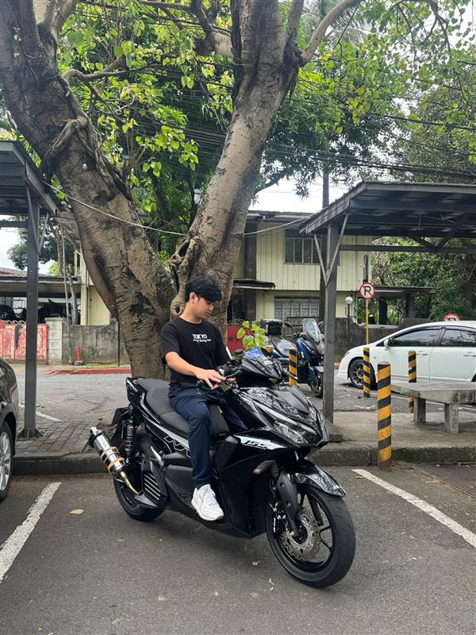
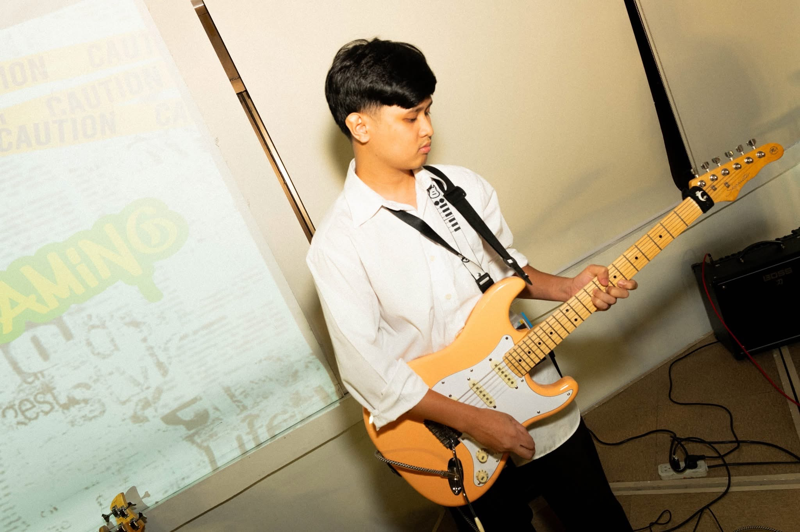

About Me
Hi, I'm Miles Angelo C. Gemillan. I'm an ambitious Computer Science student who loves cybersecurity, music, and constantly improving myself.
Education / Achievements
Bachelor of Science in Computer Science with Specialization in Cybersecurity
Active in Capture the Flag (CTF) competitions and Hack The Box
IT Experience
Uses Kali Linux, Wireshark, Virtualization tools, Burp Suite, and various forensic utilities for CTFs
Experience with command-line tools, compression utilities, and network analysis
Hobbies & Interests
Playing guitar (intermediate rhythm and lead)
Practicing with bands and exploring tone shaping
Cybersecurity challenges, problem solving, and learning new tools
Goals in Life / Dream
Become a skilled cybersecurity professional
Master digital forensics and offensive security
Grow as a musician and perform confidently with a band
Projects
I will put my future projects here